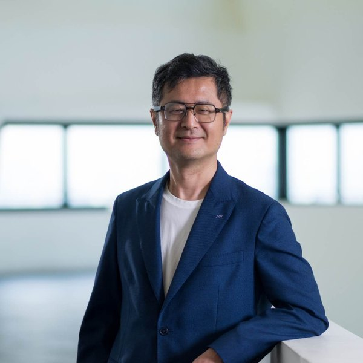
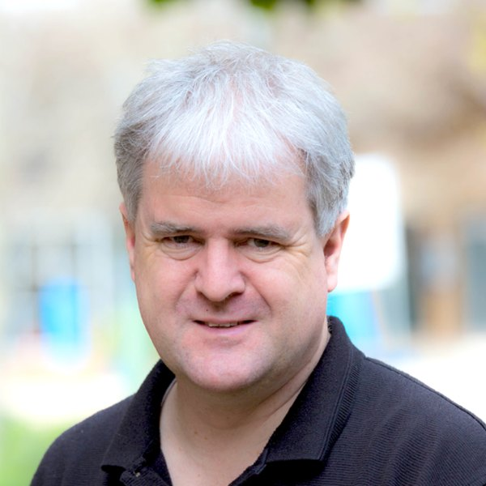
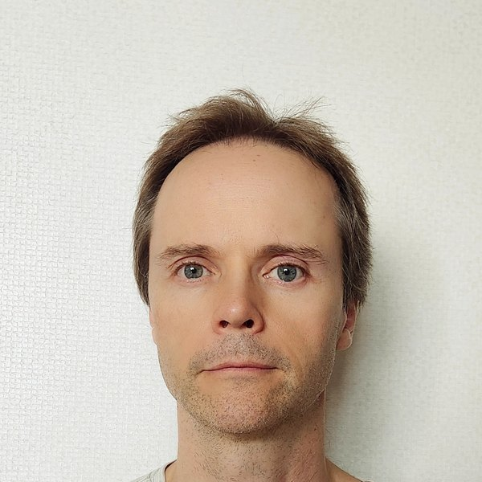
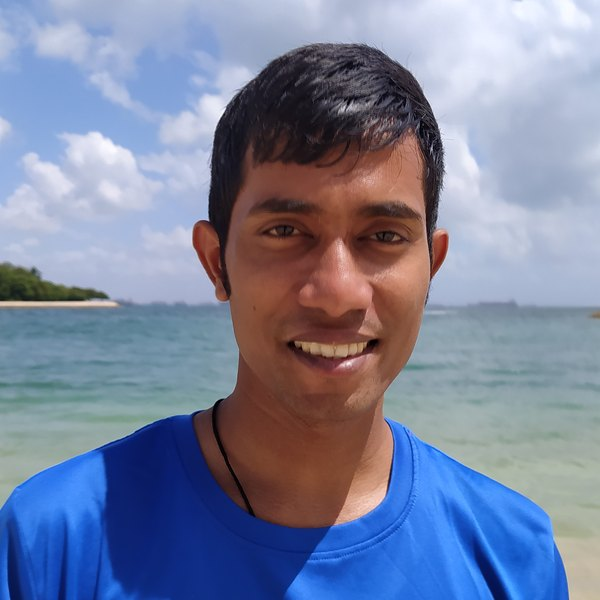

As smartglasses, head-mounted displays, and body-worn devices move from research prototypes to mass-market products — Apple Vision Pro, Meta AI Glasses, Android XR — the central design challenge in wearable mixed reality is no longer what to display. The harder question is how an AI agent should decide what to surface, in what form, and when, on behalf of a user whose attention is divided between physical and digital contexts.
AHIMR'26 focuses on AI-mediated interaction in mixed reality: systems where an AI agent, rather than the user, decides how information is transformed, timed, and delivered through wearable MR devices. This is the defining mechanism of the Heads-Up Computing paradigm — the system adapts to the user's state rather than the user adapting to the device — grounded in resource-rational HCI, where human attention is a finite resource to steward rather than exploit.
Every AI-mediated MR system must solve all three. We organize the workshop — and the call — around them.
Keynotes and curated papers set up the problems; a structured debate and three world-café breakouts produce written outputs the community keeps.
Framing the central question: what does good AI mediation look like on wearable MR devices?
AI-mediated sensing and user modelling: inferring attentional state in real-world wearable MR contexts.
AI-driven transformation and delivery: re-authoring information for heads-up, divided-attention contexts.
Three full papers, one per cluster — Sensing & Modelling, Transformation & Delivery, Trust & Agency.
Six × 5-min short papers and position statements — work-in-progress and emerging directions across all clusters.
Three parallel groups, one open problem each: (a) reliable attentional sensing on commodity hardware; (b) automating information transformation for wearable MR; (c) formalising the AI delivery objective function.
Rapporteurs present written problem statements; a panel synthesises findings and sets priority next steps.
We welcome completed research, work-in-progress, and position statements across all three clusters.
All submissions must use the IEEE Computer Society VGTC conference format. Templates and detailed guidelines are at tc.computer.org/vgtc/publications/conference.
Submissions undergo single-blind peer review by the program committee. For accepted papers, camera-ready versions must also use the IEEE VGTC format; they appear in the ISMAR 2026 Adjunct Proceedings on IEEE Xplore.
Questions? Contact shengdong.zhao@cityu.edu.hk.
All deadlines are 23:59 Anywhere on Earth (AoE).
A cross-institutional team spanning Heads-Up Computing, AR/MR systems, wearable input, and interactive information access.




Confirmed and invited members across wearable computing, HCI, MR systems, and information access.